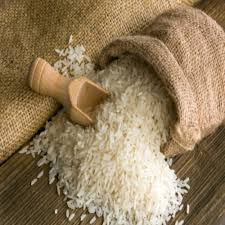
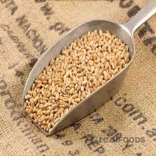
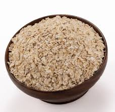
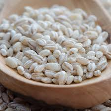
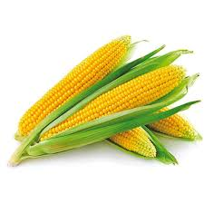

Organic Rice (Basmati)
Price: ₹80
Quantity: 1 Kg
Description:
Our organic Basmati rice is grown in the fertile plains of India,
known for its long grains and aromatic fragrance. Free from synthetic fertilizers,
it is perfect for biryanis, pulaos, and everyday meals.
Organic Wheat (Whole Grain)
Price: ₹50
Quantity: 1 Kg
Description:
Our whole grain organic wheat is stone-ground to retain its natural nutrients.
Ideal for making bread, chapatis, and other baked goods, it offers a wholesome
taste and texture without any additives.


Organic Oats (Rolled)
Price: ₹60
Quantity: 1 Kg
Description:
Our rolled oats are organically grown and minimally processed,
making them a perfect choice for a healthy breakfast. Rich in fiber,
they can be used in porridge, smoothies, or baking.
Organic Barley (Pearl)
Price: ₹70
Quantity: 1 Kg
Description:
Our organic pearl barley is a versatile grain that can be used in soups,
salads, or as a side dish. High in fiber and nutrients, it is a great addition
to a balanced diet.


Organic Corn (Maize)
Price: ₹40
Quantity: 1 Kg
Description:
Our organic corn is harvested at peak ripeness, offering a sweet and crunchy
flavor. Perfect for salads, salsas, or as a side dish, it is grown without
synthetic pesticides or fertilizers.